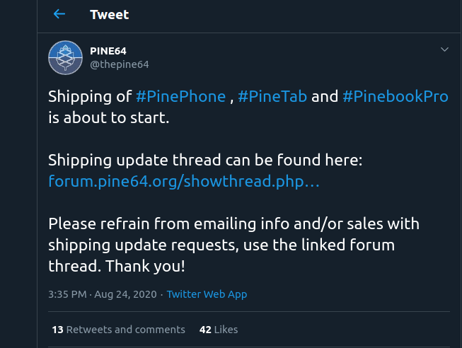
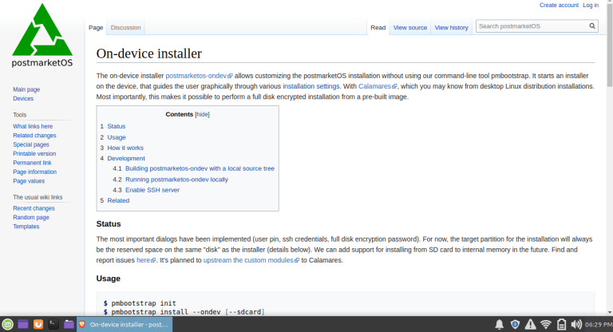

your number one source for linux phone news
In an exciting new tweet today, Pine64 announced that the shipments of the new PinePhone PostmarketOS Community Edition, the Pinetab, and the Pinebook Pro are about to begin.
We knew that the shipments of the new PinePhone CEs were to begin in late August, but this is exciting news just days after the device sold out on the Pine Store.
If you ordered any of these exciting products from Pine64, expect to see a DHL shipment show up very soon!
If you have a new PostmarketOS Community Edition on the way to you, whether you ordered the standard package or the Convergence Bundle, then you might be wondering if you will need to take any special steps to get it set up and ready for use when it arrives.
Not to worry! The setup process for your device will be very simple. Since your PinePhone will arrive with PostmarketOS preinstalled, you will not have to worry about installing it to an SD card like you will have to do if you would like to test other Linux phone operating systems.
Normally, folks wanting to use PostmarketOS would use pmaports’ pmbootstrap tool, but since your device is going to come with PostmarketOS ready to use out of the box, you will not have to undergo this process. Instead, you will be able to use an on-device installer (the familiar Calamares) to prepare your OS to your liking.
You’ll be prompted to set up your PIN code, set up SSH credentials if you desire, and set up full-disk encryption if you’d like (which you definitely should!).
That’ll be it! You will then be free to install other applications through the terminal or through the Software Centre as you would on any other Linux distribution. Your PinePhone will come with the Phosh environment by default, which is a great mobile UI developed by Purism for the Librem 5.
In a future article, we will explore PostmarketOS further, show you some applications that are mobile-friendly, and dive a little further into the Phosh and Plasma Mobile environments so you can know better which environment might be right for you!
Stay tuned, and keep an eye on your mailboxes if you’re expecting your new Pine64 device!